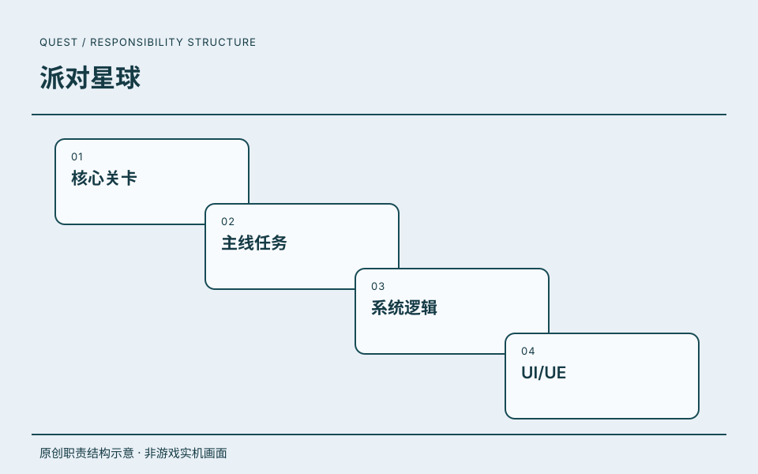

04 / 关卡与任务地图 · PROJECT 01
派对星球.
高级系统策划
这段项目经历涉及核心关卡、主线任务、系统逻辑与 UI/UE。
职责沿用该段公司经历的记录；共同职责不逐项归为单个项目的独立成果。

原创职责结构示意 · 非游戏实机画面ROLE / 我的角色高级系统策划
在关卡、任务与系统界面之间，把玩家的游玩路径串联起来。
SCOPE / 工作范围工作职责
- 01核心关卡
- 02主线任务
- 03系统逻辑
- 04UI/UE
RECORD / 可追溯记录项目记录
《派对星球》列于这段任职经历中。
- 任职公司
- 北京趣丸科技有限公司
- 角色
- 高级系统策划
- 时间
- 2021.12—2022.07
任职、角色与职责依据本人履历及确认。图示是本站原创的职责结构表达。
DESIGN JOURNAL / 方案摘要
项目方案.
读背景、职责、方案与可证实产出。
 关卡与任务系统 · 本站原创脱敏结构图
关卡与任务系统 · 本站原创脱敏结构图PROJECT / 工作说明关卡与任务系统
项目背景
关卡、转盘、目标提示和任务系统需要形成连贯的游玩路径。
本人职责
两份文档的创建与修改记录署名吴天昊，确认关卡交互优化与主线任务方案工作。
关键方案
整理按钮按下与长按自动反馈、倍率解锁提示、地图布局和新手路径；主线任务区分行为与收集判定，明确跳转、红点与领奖状态。
可证实产出
形成版本化优化需求、主线任务规则与状态反馈说明。文档中的留存和参与率是目标，不作为已达成业绩。
摘要依据：《关卡玩法优化方案》《主线任务》署名更新记录，2022年。本站原创交互结构图；不展示内部配置、概率、奖励数值和数据目标。
放大流程图 ↗阅读文档摘要 ↗ 在页面内阅读流程图＋
可滚动阅读大图；也可打开流程图缩放。下方文字提供同等内容。